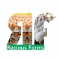
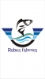
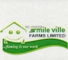
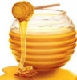
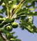

Lagos Agriculture
|
Agriculture
Peacecamp Global Investment Nigeria Limited is an agricultural that specialize on production and agricultural cultivation of some agri-products. Qaxport International Enterprises is an agricultural company that deals on the marketing and processing of agricultural produce in Nigeria.  Razo Farms Ltd is an agricultural services firm that carries out farm operations, poultry services, fish & snail farming and the production & sales of Poultry and other live-stock equipments. Real Oil Mills (ROM) Nigeria is a limited liability agricultural company that based on processing and marketing of vegetable oil, palm oil, and other associated products in Nigeria.  We deal in poultry, horticulture and aquaculture...Recious Farms is committed to enriching our client by providing the opportunity to invest in farm business also giving uncompetitive interest rate. Rehoboth natural fine food Nigeria Limited is into repackaging and distribution of extensive range of agricultural products in Lagos. Rontrex Agricultural Services is a company dealing on general agricultural services such as warehousing and export of agricultural products.   No. 14, Seriki Street, Cassidy Bus/Stop Okoko, Ojo, Lagos State No. 14, Seriki Street, Cassidy Bus/Stop Okoko, Ojo, Lagos State 0803 379 4953, 0803 634 3902 0803 379 4953, 0803 634 3902Rubies Fisheries is into fish farming for both local consumption and exports within the West African Region. It has a platform for investment opportunities known as YASOI, it is an initiative of Rubies Fisheries a division of Puregold Ltd (RC 648452). Plot 1683 Sanusi Fafunwa, Empire Place Victoria Island, Lagos Nigeria01 631 1110, 01 471 8127Saro Agro-Allied is a subsidiary of Saro Group and a leading agricultural establishment in production and exportation of cocoa, cashew and sesame.  Suite 12 Awesome Grace Plaza 135 Bashiru Shittu Street, Magodo GRA Phase 2 Shagisha, Lagos0810 814 5542, 0806 139 8716, 0814 011 9498Smile Ville Farms Limited is an indigenous Nigerian firm that is into agricultural business. The company started operation in 2015. It was registered as Sefidif Ventures in June 22, 2012. Plot 6 Alhaji Lateef jakande Road Opposite Union Bank, Agidingbi Ikeja, Lagos Nigeria0810 304 6957, 0808 505 7735Sprinklers Farm is an agricultural fish farming business in Lagos that rears different types of fishes for commercial and agricultural use. Stephlom Resources Ventures Limited is an agricultural dealer on all types of agricultural produce. 3rd Floor FMN House Golden Penny Place, Apapa, Lagos Nigeria0704 512 4227, 0816 933 3430, 0810 349 5284Thai Farm International Limited (TFI) is an agricultural service company processing locally grown cassava tubers to produce high quality cassava flour. 3B, Chris Efunyemi Onanuga Street, Lekki Phase I, Lagos State, Nigeria01 461 9170, 01 279 3653The Candel Company offers agricultural services such as d production of agricultural chemicals in Lagos State.  Timlinmal Nigeria Limited is an agricultural honey farm business based on the production and supply of natural honey. Lagos State Polytechnic Ikorodu Campus along Ishagamu road, Ikorodu, Lagos Nigeria0802 089 2018, 0704 056 1768Ultilex Farm Limited agric firm offers general services on food processing, consultancy, fish Pond Construction and distribution of food produce in Lagos. Varden Farms Scheme was founded in 2014, and in 2016 Varden Farms and Resort was established, pioneering the developing trend of commercial luxury farm houses in Nigeria. With emphasis on mechanized and complete ecosystem.  Woodgate International deals on agricultural farming of domesticated species created food surpluses such as cocoa and others. |